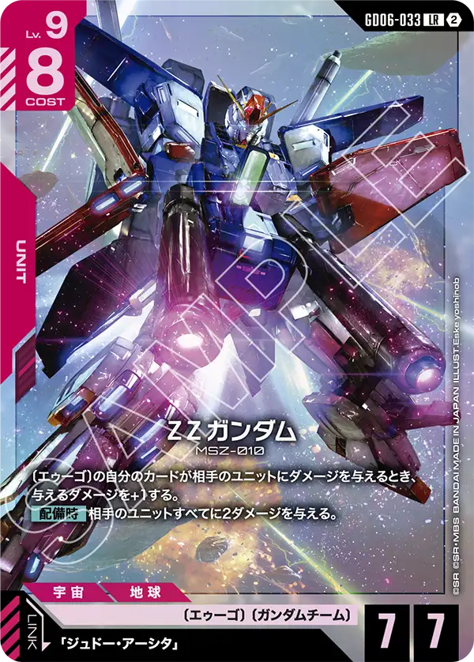
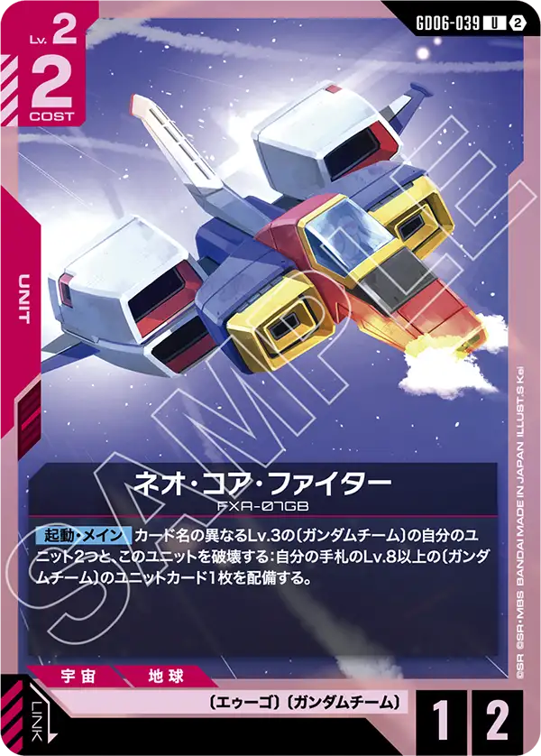
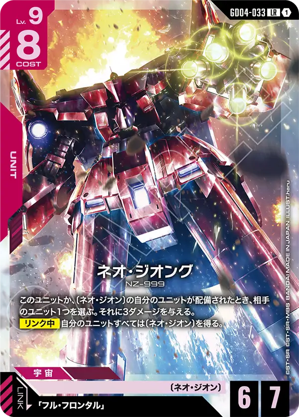
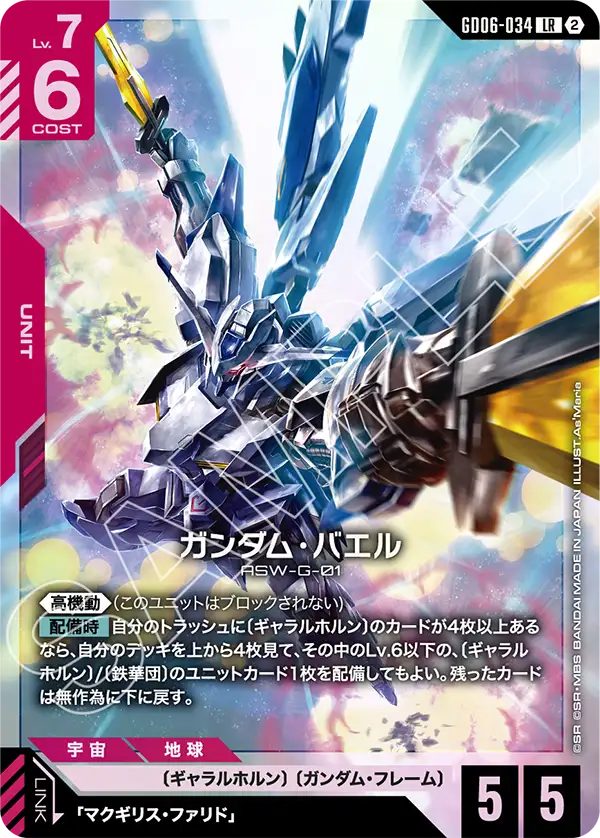

赤LRの顔ぶれ
GD06の赤LRは2枚。〔ガンダムチーム〕のΖΖガンダムと〔ギャラルホルン〕のガンダム・バエル。ΖΖはLv.9コスト8で弾の中で最も重く、バエルはLv.7コスト6でトラッシュの枚数を条件にする。
赤の新しい特徴は〔ガンダムチーム〕（10枚・全部GD06・〔エゥーゴ〕と重なる）。〔ギャラルホルン〕は25種あり、GD06で10枚が増えた（種類はパラレル版を除いて数えた）。

ΖΖガンダム GD06-033
〔エゥーゴ〕の自分のカードが相手のユニットにダメージを与えるとき、与えるダメージを+1する。 【配備時】相手のユニットすべてに2ダメージを与える。
【配備時】の全体2ダメージに、〔エゥーゴ〕の自分のカードが与えるダメージ+1が重なる。ΖΖ自身も〔エゥーゴ〕のカードなので、文面どおりなら配備時の2ダメージも3になる。
ジュドー・アーシタ（GD06-088・Lv.5コスト1）がリンク中に破壊されると、トラッシュのLv.2以下の〔ガンダムチーム〕ユニットカード1枚を手札に戻す。〔ガンダムチーム〕にはΖガンダム（GD06-035・ユニットを破壊したときAP3以下に2ダメージ）、百式（GD06-046・アタック時に味方のAP+2）、ガンダムMk-Ⅱ、コア・トップ、コア・ベース、ネオ・コア・ファイターが入り、ΖΖの「ダメージ+1」はこれら全部に乗る。
レベル9、コスト8と言う非常に重たいカードではある物の配備時に相手全体に2ダメージ、エゥーゴのカードが与えるダメージを増加させる強力なカードとなっている。
エゥーゴのカードが効果対象となるのでベースやコマンドも対象となる点に目が行きがちだが、エゥーゴのユニットカードが相手とのバトルで与えるダメージも増加する点を忘れないでおきたい。
また、ネオ・コア・ファイター[GD06-039]を使うことによって早期に着地させることができる点も少しおもしろいが、専用構築にしないと基本揃わず、専用構築にしても揃わない場合が多いので過信してはいけない。
ネオ・ジオング[GD04-033]と似た運用になる可能性を感じる。



ガンダム・バエル GD06-034
《高機動》(このユニットはブロックされない) 【配備時】自分のトラッシュに〔ギャラルホルン〕のカードが4枚以上あるなら、自分のデッキを上から4枚見て、その中のLv.6以下の、〔ギャラルホルン〕/〔鉄華団〕のユニットカード1枚を配備してもよい。残ったカードは無作為に下に戻す。
ブロックされないLv.7で、トラッシュの〔ギャラルホルン〕が4枚以上あればデッキの上4枚からLv.6以下の〔ギャラルホルン〕/〔鉄華団〕のユニットを1枚連れてくる。条件はトラッシュの枚数なので、中盤以降に出すほど通りやすい。
マクギリス・ファリドはGD06-089（Lv.4コスト1・リンク中にシールドを破壊したとき、〔ギャラルホルン〕の自分のユニット1つがアクティブのLv.5以下の相手ユニットをアタック先に選べる）とST05-012の2種がリンクする。めくって配備できる候補は、Lv.6以下の〔ギャラルホルン〕ユニットが13枚、〔鉄華団〕ユニットが19枚。GD06の〔ギャラルホルン〕にはガンダム・ヴィダール（GD06-036・リンク時に1ダメージ）、レギンレイズ・ジュリア、ガンダム・キマリスヴィダールが並ぶ。
ギャラルホルンが好きなプレイヤーにとっては待望のカードだろう。
今まで非常に使いにくかったギャラルホルンだが、このカードで今まで使いたかったけど使いにくかったプレイヤーも使いたいと思えるだろう。
「自分のトラッシュに〔ギャラルホルン〕のカードが4枚以上あるなら」と言う共通効果といえる効果は持っているもののレベル6以下のユニットを配備できる効果は非常に強力である。
ガンダム・キマリス[GD02-070]を配備することができれば手札交換も実施できるため、後続を整えやすくなるだろう。
また、配備できるのは鉄華団も含まれるのでガンダム・フラウロス（流星号）[GD05-060]やガンダム・グシオンリベイク[GD02-055]を配備できるのは魅力的である。


カードの効果文は公式カードリスト（2026年10月16日時点）から転記した。誤りに気づいたらXアカウント（@gcg_stats）のDMで教えてほしい。